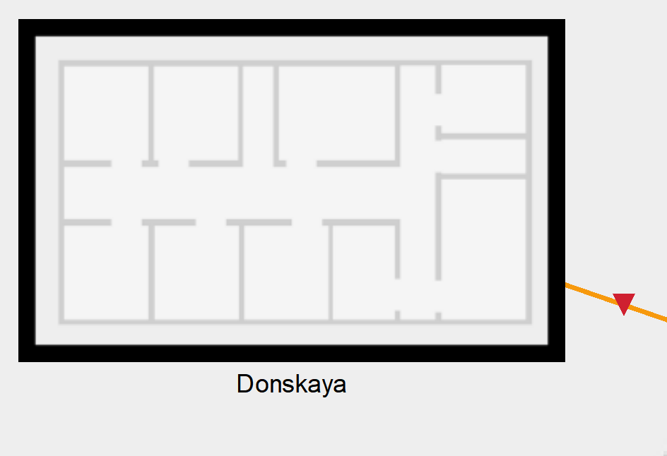
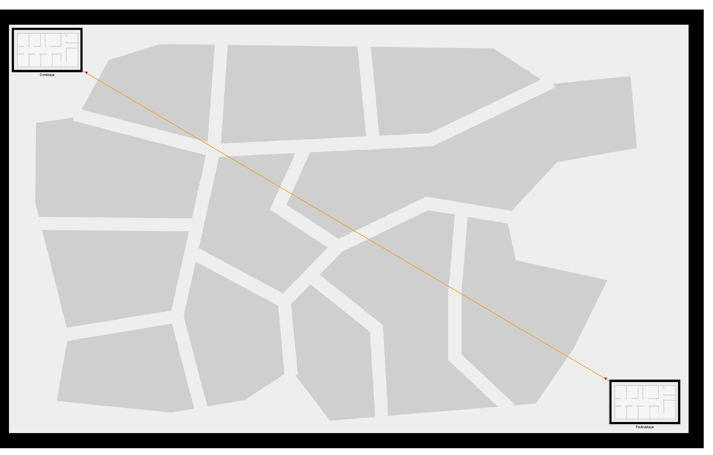

Информация
Докладчик
Вводная часть
Цель работы
- Получить навыки работы с физической рабочей областью Packet Tracer, а также учесть физические параметры сети.
Последовательность выполнения работы
Cхема сети без учёта физических параметров сети в логической рабочей области Packet Tracer
Физическая рабочая область Packet Tracer
::: ::: {.column width=“70%”}

::: ::::::::::::::
Изображение здания в физической рабочей области Packet Tracer (сеть территории «Донская»)
::: ::: {.column width=“70%”}

::: ::::::::::::::
Пример размещения в физической рабочей области Packet Tracer серверной с подключением оконечных устройств (сеть территории «Донская»)
::: ::: {.column width=“70%”}

::: ::::::::::::::
Отображение серверных стоек в Packet Tracer
::: ::: {.column width=“70%”}

::: ::::::::::::::
Повторитель с портами PT-REPEATER-NM-1FFE и PT-REPEATER-NM-1CFE для подключения оптоволокна и витой пары по технологии Fast Ethernet
::: ::: {.column width=“70%”}

::: ::::::::::::::
Схема сети с учётом физических параметров сети в логической рабочей области Packet Tracer
::: ::: {.column width=“70%”}

::: ::::::::::::::
Отображение соединения двух территорий в физической рабочей области Packet Tracer
::: ::: {.column width=“70%”}

::: ::::::::::::::
Вывод
Вывод
- Получены навыки работы с физической рабочей областью Packet Tracer, а также учтены физические параметры сети.